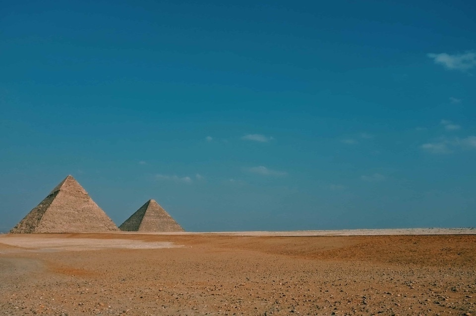
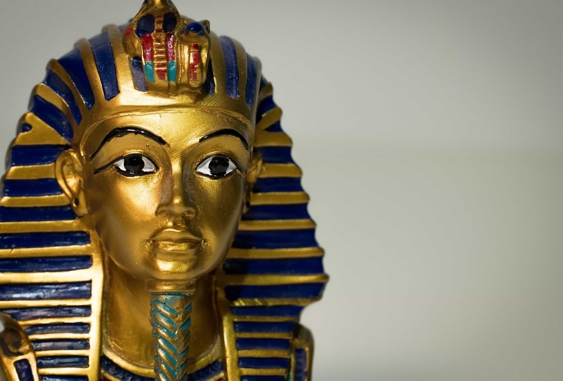
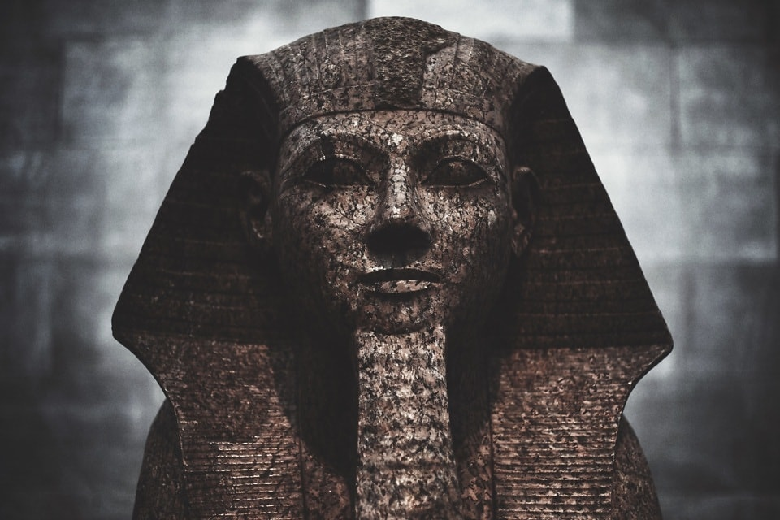
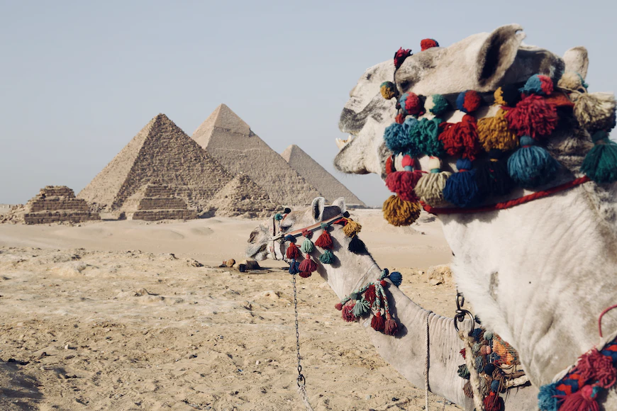

أبو الهول هو تمثال لمخلوق أسطوري بجسم أسد ورأس إنسان وقد نحت من الحجر الكلسيّ، ومن المرجح أنه كان في الأصل مغطى بطبقة من الجص وملون، ولا زالت آثار الألوان الأصلية ظاهرة بجانب إحدى أذنيه يقع على هضبة الجيزة على الضفة الغربية من النيل في الجيزة، مصر، ويعد أبو الهول أيضاً حارساً للهضبة. وهو أقدم المنحوتات الضخمة المعروفة، يبلغ طوله نحو 73.5 متر. . من ضمنها 15 متر طول قدميه الأماميتين، وعرضه 19.3 م، وأعلى ارتفاع له عن سطح الأرض حوالي 20 متراً إلى قمة الرأس. يعتقد أن قدماء المصريين بنوه في عهد الملك خفرع (2558 ق.م -2532 ق.م)، باني الهرم الأوسط في الجيزة.
الأهرامات
مجمع أهرامات الجيزة (يُطلق عليه أيضًا اسم مقبرة الجيزة)، هو موقع أثري على هضبة الجيزة في القاهرة الكبرى في مصر، يضم المجمع كل من الهرم الأكبر وهرم خفرع وهرم منقرع جنبًا إلى جنب مع المجمعات الهرمية المرتبطة بها وتمثال أبو الهول بنيت هذه الأهرامات جميعها في عهد الأسرة الرابعة للمملكة القديمة في مصر القديمة بين عامي 2600 و 2500 قبل الميلاد. كما يضم الموقع عدة مقابر وبقايا قرية عمالية.يقع المجمع على أطراف الصحراء الغربية على بعد حوالي 9 كيلومترات (5.6 ميل) غرب نهر النيل في مدينة الجيزة، وحوالي 13 كيلومترًا (8 ميل) جنوب غرب وسط مدينة القاهرة. أدرج الموقع (إلى جانب مدينة منف) المجاورة في قائمة اليونسكو للتراث العالمي في عام 1979.


الآثار
تستخدم آثار تقريبا بصيغة الجمع، وهو مصطلح يشير للأشياء من العصور القديمة، وخاصة المتعلقة بحضارات البحر الأبيض المتوسط في فترة العصور الكلاسيكية القديمة كاليونان وروما ومصر القديمة والحضارات الأخرى في الشرق الأدنى . ويمكن أيضا أن يضم المصطلح القطع الأثرية من فترات سابقة مثل العصر الحجري المتوسط ، والحضارات الأخرى من آسيا وأماكن أخرى . تم العثور على ظاهرة إعطاء قيمة عالية للتحف القديمة في الثقافات الأخرى، ولا سيما الصين منذ الفي إلى ثلاث آلاف سنة مضت وكذلك ثقافات ما قبل كولومبوس في أمريكا الوسطى، حيث عثر بشكل خاص على قطع أثرية من حضارة الأولمك القديمة التي أعيد دفنها في مواقع بارزة في وقت لاحق حتى الغزو الإسباني.
الآثار
تستخدم آثار تقريبا بصيغة الجمع، وهو مصطلح يشير للأشياء من العصور القديمة، وخاصة المتعلقة بحضارات البحر الأبيض المتوسط في فترة العصور الكلاسيكية القديمة كاليونان وروما ومصر القديمة والحضارات الأخرى في الشرق الأدنى . ويمكن أيضا أن يضم المصطلح القطع الأثرية من فترات سابقة مثل العصر الحجري المتوسط ، والحضارات الأخرى من آسيا وأماكن أخرى . تم العثور على ظاهرة إعطاء قيمة عالية للتحف القديمة في الثقافات الأخرى، ولا سيما الصين منذ الفي إلى ثلاث آلاف سنة مضت وكذلك ثقافات ما قبل كولومبوس في أمريكا الوسطى، حيث عثر بشكل خاص على قطع أثرية من حضارة الأولمك القديمة التي أعيد دفنها في مواقع بارزة في وقت لاحق حتى الغزو الإسباني.


الصحراء
يوجد بمصر الكثير من الاماكن المتطوره بالتكنولجيا والمباني العالية التي تتميز بتصاميم متقدمه وطالما لم تخلو من الصحراء فهي تجمع بداخلها الصحراء والجمال والاهرامات والاثار وهي تشتهر بذلك
تشتهر مصر بالاهرامات والاثار القديمة والحظارات الزاهيه الفرعونية. فجميع العالم بلا استذثناء يعلم تاريخ الفراعنه العريق في العلم والاكتشافات واختراعتهم وبناء الاهرامات الظخمه
فاثار مصر تعتبر من اندر القطع الاثريه فالعالم وتتميز بتصاميم قوية لا تصادفها في حياتنا الطبيعية, ايضا اشكال تماثيلهم واحجامها فاحجامها جدا كبيره لدلرجة استحالة بناء اجسام تطابقها في الحجم